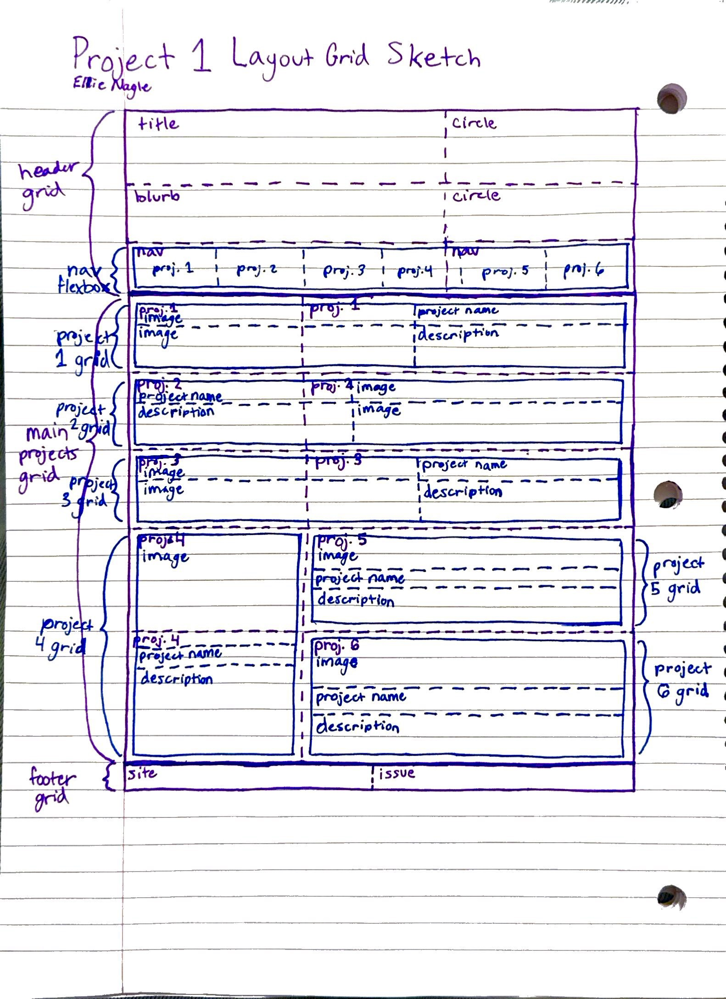
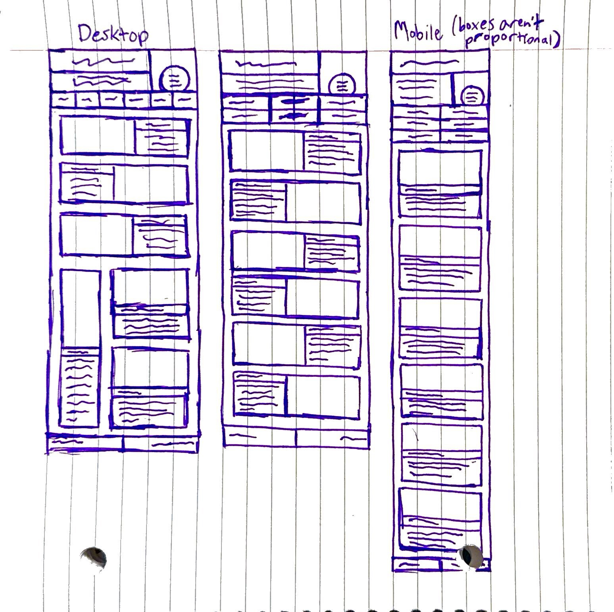

Link to Site Built to Spec (spec.html)
Link to Original Design Source PDF
Pages from Animation Magazine publicationResources Used
- SVG Circle Resources
-
Image Resources
- Website version of article (used to pull images for Phase 1)
-
Images
- circle - I created this SVG for this page
- Chimera-Brigadejpg
- The-Broos
- Lost-in-the-Future
- Mechazaurs
- Hippo-Kids
- Matita-HB
- Font Resources
- Resource for Pseudo-Class Selectors - Used to style the rounded corners on the nav bar and some spacing on the documentation page


Sketches
Sketch of Layout Grids

Sketch of Intended Mobile/Narrow Version (Responiveness)

Site Goal
The end goal of this website is for it to be a portfolio I can use when applying to co-ops and jobs. This means that it's intended audience is recruiters and hiring managers/workers.
For Phase 1, this means that I chose a simpler design that is also easy to navigate so that the content of the page is the focus. I also chose a design that used a tile-like organization of content because it allows future flexibility of how I display work on the portfolio, and makes it easier to expand the amount of content on the page if needed.
Additional Notes
- The project sections are designed to be like tiles/a template which can be reused to add more sections. (This is the reason each section is its own grid, instead of creating one grid for all the sections with many grid rows/columns to add each section's information. Instead, one grid arranges the tiles and then the tiles each arrange their own content.)
- Creating the rounded corners on the nav bar was interesting because the background is drawn by the a element, so changing the border-radius of the background required a chain of elements in a descendant selector, and then I only wanted to affect the first and last nav bar elements so I had to use a pseudo-class selector within the descendant selector to get the first and last li elements (which each have a link element as a child).